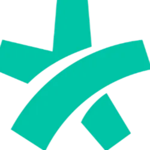

Seu Paciente Tem Pressa.
Se Você Não Responder Agora...
Outro Vai.
O Nexus transforma seu WhatsApp em uma máquina de agendamento. Enquanto você dorme, ele responde, qualifica e agenda.
Integrado com todas as plataformas que você usa:
 Google Drive
Google Drive
 WhatsApp
WhatsApp
 Gmail
Gmail
 Meta
Notion
ClickUp
Meta
Notion
ClickUp
 N8n
Google Calendar
Google Drive
WhatsApp
Gmail
Meta
Notion
ClickUp
N8n
N8n
Google Calendar
Google Drive
WhatsApp
Gmail
Meta
Notion
ClickUp
N8n
Mesma Região. Mesma Especialidade. Resultados Opostos.
A única diferença? Uma delas responde em 30 segundos.
O Nexus Não Trata Todo Paciente Igual. Ele Entende Quem Precisa de Que.
Cada paciente que chega tem um perfil diferente. O Nexus identifica, age com inteligencia — e escala para sua equipe no momento certo.
O Decidido
Ja sabe o que quer. A IA agenda direto, sem fricção — em menos de 1 minuto.
O Curioso
Tem dúvidas sobre preço, procedimento ou horário. A IA responde com inteligência, tira objeções e converte.
O Sensível
Precisa de empatia e atenção humana. A IA faz o primeiro acolhimento e, só quando detecta necessidade real, escala para sua equipe — no momento ideal.
Onde a IA termina, o cuidado humano começa. Sem lacunas.
Você Não Contrata So Uma IA. Você Ganha o Controle Total.
Dashboard, Pipeline de vendas, chat em tempo real e métricas — tudo integrado ao seu WhatsApp.
Pipeline de Vendas
Veja onde cada lead está em tempo real. Nenhum paciente esquecido.
Intervencao com 1 Clique
A secretaria assume qualquer conversa na hora. Sem o paciente perceber transição.
Métricas em Tempo Real
Acompanhe taxa de resposta, agendamentos e receita recuperada. Tudo num painel só.
Números Que Clínicas Inteligentes Ja Conhecem
Dados reais do mercado de saúde sobre atendimento automatizado. Esses sao os resultados que o Nexus foi construido para entregar.
Velocidade de Resposta
Pesquisa Lead Response Management
Leads contactados em 5 min tem 100x mais chance de conversão. A maioria das clínicas demora 2 a 4 horas para responder.

Demanda Fora do Horario
Comportamento do Paciente Digital
35% das tentativas de agendamento ocorrem fora do horário comercial. Sem atendimento 24/7, esse faturamento evapora.
Impacto dos No-Shows
Gestão de Agenda Médica
Clínicas com confirmação automática reduzem no-shows em até 70%. Um médico com ticket de R$ 350 e 25% de faltas perde até R$ 38.500 por mes.

WhatsApp como Canal Principal
Mercado Brasileiro
93% dos brasileiros usam WhatsApp diariamente. É o principal canal de contato — e o mais negligenciado pelas clínicas.
IA no Atendimento em Saúde
Tendência Global
Clínicas que adotam IA ganham vantagem competitiva duradoura. A adoção está acelerando — quem espera, fica para trás.
Velocidade de Resposta
Pesquisa Lead Response Management
Leads contactados em menos de 5 minutos tem 100x mais chance de conversão do que os contactados em 30 minutos. A maioria das clínicas demora 2 a 4 horas.
Demanda Fora do Horario
Comportamento do Paciente Digital
35% das tentativas de agendamento acontecem fora do horário comercial. Sem atendimento automatizado, esse faturamento simplesmente evapora.
Impacto dos No-Shows
Gestão de Agenda Médica
Clínicas com confirmação automática reduzem no-shows em até 70%. Um médico com ticket de R$ 350 e 25% de faltas perde até R$ 38.500 por mes.
WhatsApp como Canal Principal
Mercado Brasileiro
93% dos brasileiros usam WhatsApp diariamente. Para clínicas, e o principal canal de primeiro contato — e o mais negligenciado em tempo de resposta.
IA no Atendimento em Saúde
Tendência Global
Clínicas que adotam IA conversacional cedo ganham vantagem competitiva duradoura na sua região. A adoção esta acelerando — quem espera, fica para trás.
*Dados baseados em pesquisas de mercado publicadas. Resultados individuais podem variar de acordo com especialidade, região e volume de atendimento.
Perguntas Que Todo Dono de Clínica Faz Antes de Começar
"Minha secretaria não vai perder o emprego?"
"O paciente percebe que é IA?"
"Quanto tempo leva para implementar?"
"E se eu não gostar?"
"Meus dados e dos pacientes estão seguros?"
"Integra com meu sistema de agenda?"
"Quanto custa?"
Descubra Quanto Sua Clínica Pode Recuperar
Preencha em 2 minutos. Receba um relatório personalizado mostrando suas perdas atuais e como resolve-las. Sem compromisso. Sem cartão.
O que você recebe (sem pagar nada):
Um relatório personalizado com números reais sobre a operação da sua clínica.
Olá. Eu sou a Maia.
Estou pronta para analisar sua clínica.